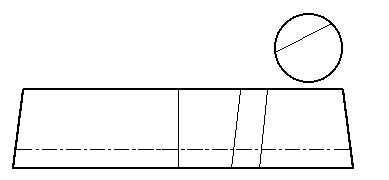

Hat
Herjolfsnes, no.83-86

Pattern drawing based on N�rlund
Four of the five caps found at Herjolfsnes are similar enough to one another to treat
them as a single item. They are a simple deep "pillbox" shape. In two of the
four items, the lower edged was turned under, and was not hemmed. Norlund speculates that
there might have been a fur lining attached to this "turning in".
It should be noted that in the construction of the caps, the crowns are made of two
pieces in three of the four instances, and in the fourth case (no.86), the crown is marked
by the presence of a false seam in order to simulate such construction.
- No. 83
- Cap Height: 10.5-12 cm (4-4.7") (with a "deep turning on the inner side
without being hemmed")
- Diameter at the Top: 17.5 cm (6.9")
- Diameter at the Bottom: about 18 cm (7")
- Threadcount is unknown, but it is described as a "fourshaft twilled frieze of dark
brown color"
- No. 84
- Cap Height: 10 cm (3.9") (with a "deep turning on the inner side without being
hemmed")
- Diameter at the Top: 14.5 cm (7.5")
- Diameter at the Bottom: Unknown.
- Threadcount is unknown.
- No. 85
- Cap Height: 10 cm (3.9")
- Diameter at the Top: c.16 cm (6.3") (Oval)
- Diameter at the Bottom: c.16 cm (6.3")
- Threadcount is unknown, but it is described as a "fourshaft twilled frieze of dark
brown color'
- No. 86
- Cap Height: 8-9.5 cm (3.4-3.7")
- Diameter at the Top: 17-18 cm (6.7-7")
- Diameter at the Bottom: about 18 cm (7")
- Threadcount is unknown, but it is described as a "fourshaft twilled frieze,
brownish, but the various pieces differ slightly in shade."
Some Sources:
- N�rlund, Poul. "Buried Norsemen at Herjolfsnes: an archaeological and historical
study." Meddelelser om Gronland: Udgivne af Kommissionen for ledelsen af de
geologiske og geogrfiske undersogelser i Gronland. Bind LXVII. Kobenhavn: C.A.
Reitzel, 1924.
Go to Page, Herjolsnes Site Page,
or Proceed
Some Clothing of the Middle Ages - Hats - Herjolfsnes 86, by I. Marc Carlson,
Copyright 1997 This code is given for the free exchange of information, provided the
Author's Name is included in all future revisions, and no money change hands-